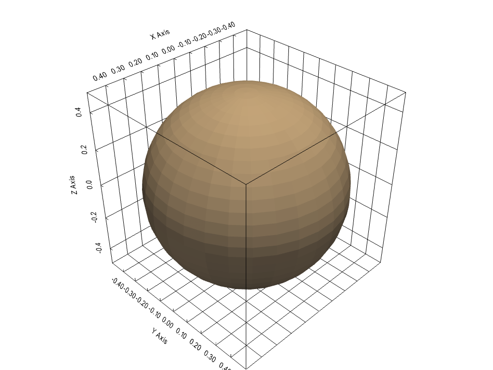

show_bounds¶
- Renderer.show_bounds(mesh=None, bounds=None, show_xaxis=True, show_yaxis=True, show_zaxis=True, show_xlabels=True, show_ylabels=True, show_zlabels=True, bold=True, font_size=None, font_family=None, color=None, xlabel='X Axis', ylabel='Y Axis', zlabel='Z Axis', use_2d=False, grid=None, location='closest', ticks=None, all_edges=False, corner_factor=0.5, fmt=None, minor_ticks=False, padding=0.0, render=None)¶
境界軸を追加します．
meshが指定されていない場合，最新の入力メッシュの境界を表示します．
- パラメータ
- mesh :
pyvista.DataSetかpyvista.MultiBlockpyvista.DataSet か pyvista.MultiBlock 境界軸を描画する入力メッシュ．
- boundspython:list か python:tuple, optional
[xmin, xmax, ymin, ymax, zmin, zmax]の形のメッシュ境界をオーバーライドする境界．- show_xaxisbool,
optional x軸を表示します．デフォルトは
Trueです．- show_yaxisbool,
optional y軸を表示します．デフォルトは
Trueです．- show_zaxisbool,
optional z軸を表示します．デフォルトは
Trueです．- show_xlabelsbool,
optional xラベルを表示します．デフォルトは
Trueです．- show_ylabelsbool,
optional yラベルを表示します．デフォルトは
Trueです．- show_zlabelsbool,
optional zラベルを表示します．デフォルトは
Trueです．- boldbool,
optional 軸ラベルと数値を太字にします．デフォルトは
Trueです．- font_size
float,optional ラベルフォントのサイズを設定します．デフォルトは16です．
- font_family
str,optional フォントファミリ．
'courier'，'times'，または'arial'のいずれかである必要があります．- colorpython:str または 3 要素 python:list, optional
すべてのラベルと軸ラベルの色です．デフォルトは白です．文字列，RGBリスト，または16進カラー文字列．例:
color='white'color='w'color=[1, 1, 1]color='#FFFFFF'
- xlabel
str,optional X軸のタイトル．既定
"X Axis"- ylabel
str,optional Y軸のタイトル．既定
"Y Axis"- zlabel
str,optional Z軸のタイトル．既定
"Z Axis"- use_2dbool,
optional これを有効にすると，プロットがよりスムーズになります．
警告
Windowsのvtk 6.3のバグにより，この関数がクラッシュするようです．
- gridbool か python:str, optional
軸アクターの背面 (
True,'back', または'backface') または正面 ('front','frontface') にグリッドラインを追加します．- location
str,optional 軸の描画方法を，スタティック (
'all') ，最近接トライアド (front) ，最近接トライアド ('back') ，原点 ('origin') に最近接スタティック，またはカメラ位置に関連する外縁 ('outer') のいずれかに設定します．次のオプションがあります:'all', 'front', 'back', 'origin', 'outer'．- ticks
str,optional 軸グリッドにティックを描画する方法を設定します．以下のオプションがあります:
'inside', 'outside', 'both'．- all_edgesbool,
optional プロットの境界にラベルなしのチェックボックスを追加します．境界のすべてのエッジを保持しながら，外側のグリッドをプロットする場合に便利です．
- corner_factor
float,optional all_edges``の場合，これはデフォルトボックスを描画する各軸に沿った係数です．フルボックスを表示するには，0.5を指定します．- fmt
str,optional 目盛り位置から目盛りラベルを生成する方法を定義するフォーマット文字列．デフォルトは，アクティブなテーマで検索されます．
- minor_ticksbool,
optional Trueの場合は，すべての軸に細かい刻みをプロットします．- padding
float,optional 軸の注釈からシーン内のデータセットを保護するための，各軸方向に沿ったオプションのパーセントパディング．デフォルトは0 (パディングなし)
- renderbool,
optional レンダリングウィンドウが表示されている場合，境界を表示した後にレンダリングをトリガーします．
- mesh :
- 戻り値
vtk.vtkCubeAxesActor境界アクター．
例
>>> import pyvista >>> mesh = pyvista.Sphere() >>> plotter = pyvista.Plotter() >>> actor = plotter.add_mesh(mesh) >>> actor = plotter.show_bounds(grid='front', location='outer', ... all_edges=True) >>> plotter.show()
